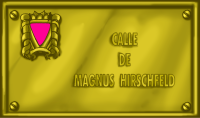
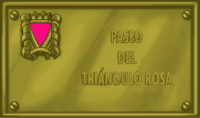

When in 1871 the new German penal code was edited, after the unification of the country, the sexual relationships among men were punished with prison (article 175). It was imposed this way a conservative vision of the code of Prussia on that of the most advanced legislations, as Bavaria or Hanover that, in 1813 and 1840 respectively, they had not penalize the homosexuality, following the influence of the French Illustration and of the Napoleonic penal code.
In this context, they are begun to lift tuneless voices with this punitive legislation toward the gais, among those that it highlights that of Magnus Hirschfeld (1868-1935) who put in operation the Scientific and Humanitarian Committee (1897) among whose objectives were the scientific analysis of the homosexuality and the abrogation of the code 175. The work of Magnus Hirschfeld achieved that the social-democrats made a petition to the German Parliament in 1898 so that the article in question was repealed that was not successful. Later on it also achieved the support of the communists and in 1929 a special parliamentary committee recommended the abolition of the article in question. He was not successful, in spite of the wide back that had this petition on the part of important scientific, artists and German writers (among other Albert Eisntein).
The wide majority that the Nazi obtained that year in the elections disabled any reformation of the Code. When finally Hitler arrives to the power in 1933, the persecution on the gays was intensified. In the Nazi propaganda the homosexuals are presented as responsible point of the moral decadence that in their opinion Germany lived like of the economic disaster of the Republic of Weimer.
May of 1933, 6 the Nazi destroy and they set on fire the noted Institute of Sexual Investigations, another creation of Magnus Hirschfeld (who achieved exile in France, where he died), disappearing this way the most important file and library of GLBT thematic of the world. The persecution toward the gays is intensified in all Germany, especially after Ernest's Röhm elimination and its clique of brown shirts in the "Night of the long knife" (in fact June 28 1934) who were presented later as some "homosexual pigs". The following year -another time June 28- they modifies the article 175 to harden the hardships against the gays.
Gradually the Nazi establish a systematic campaign of repression, without precedents in the History, against those who their enemies consider and they intern in concentration fields and extermination: gais, besides the Jews, gypsies and antifascists. In these fields, of those that are sadly famous Auschwitz, Mauthausen or Treblinka, the gays was forced to take a Pink Triangle, as distinguishing characteristic in their suits of prisoners, and a miserable life, because in general to the homophobia of the own Nazi was added, in not few occasions, internal that of the other ones. Also, when concluding the war there was not any indemnity for them, because the homosexuality continued penalized in most of the liberated countries of the Nazi yoke.
Magnus Hirschfeld put the bases of a new speech toward the homosexuality, but he played him to live a turbulent time and its important scientific contributions were silenced during years. Their name, the same as that of Pink Triangle, positions in the badges that give name to any public space of our towns or cities, besides a homage toward those who suffered the brutality and unreasonableness Nazi, should be an element of recovery of the diversity and the tolerance, in front of some attitudes of hate and barbarism that should not never have space in our society.